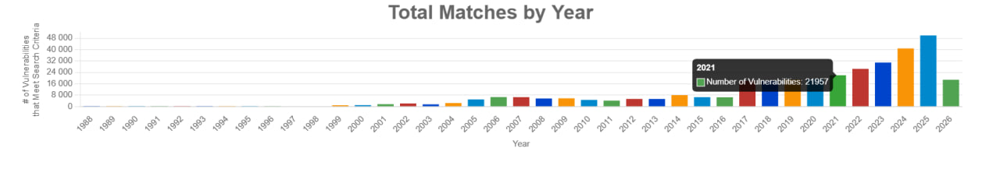
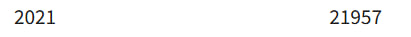
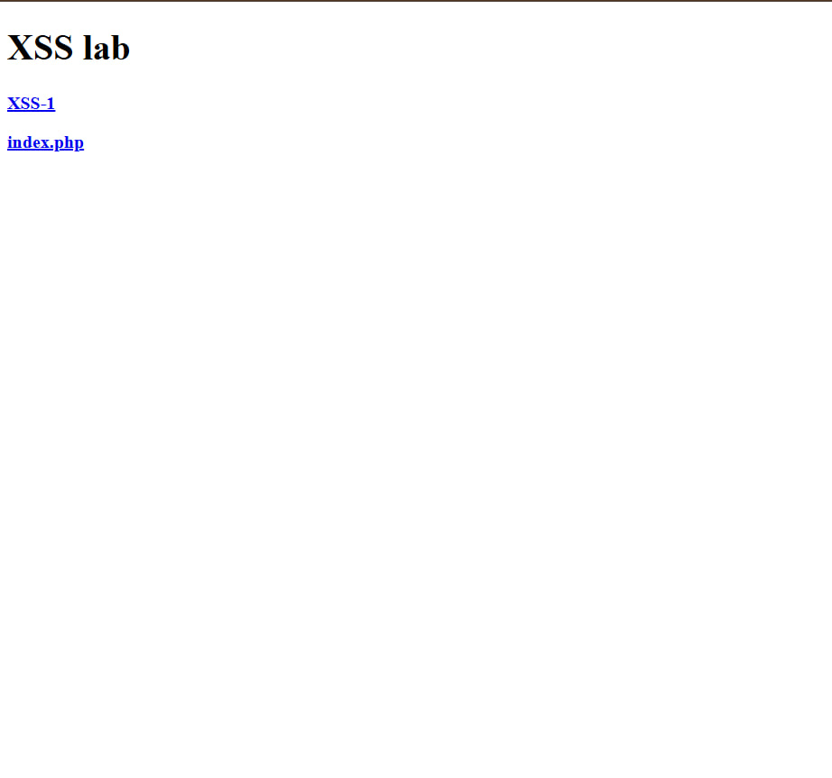
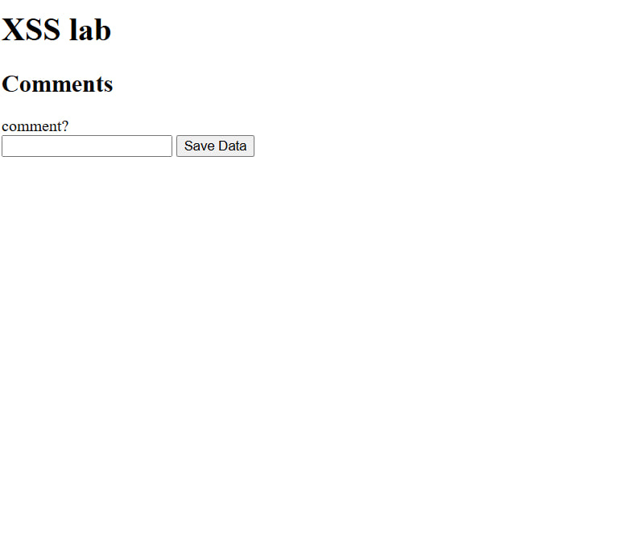
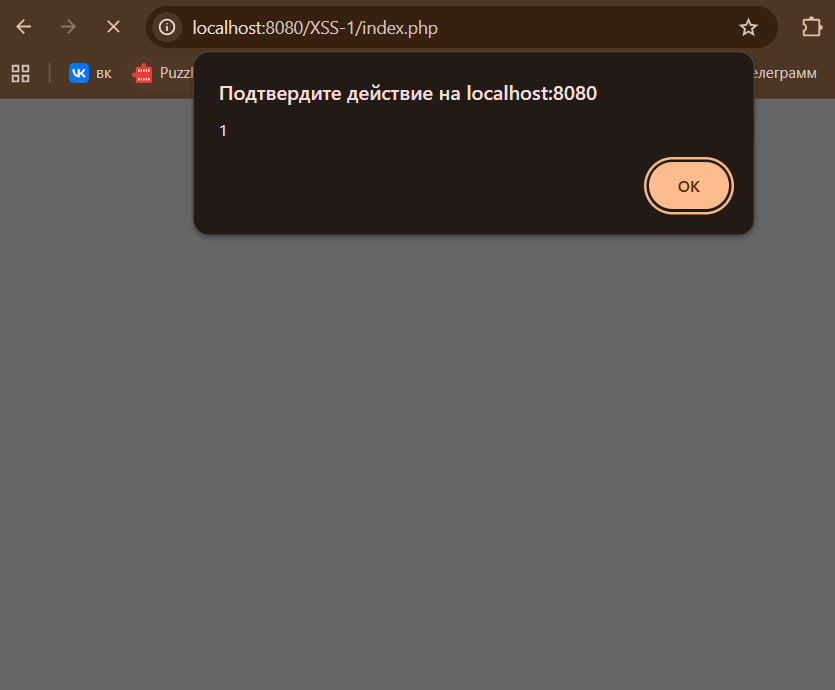

Компонент:
phpWhois
Назначение компонента:
phpWhois — это PHP-библиотека, предназначенная для получения WHOIS-информации о доменных именах. Используется для проверки регистрационных данных доменов и получения сведений о владельцах и DNS-записях
Описание уязвимости:
В файле example.php обнаружена уязвимость типа Cross-Site Scripting (XSS). Значение параметра $_GET['query'] передаётся в вывод без фильтрации и экранирования, что позволяет внедрять произвольный JavaScript-код
Причина:
Отсутствие обработки пользовательского ввода и небезопасный вывод данных в HTML
Тип уязвимости:
Cross-Site Scripting (XSS)
Компонент:
PHP Event Calendar
Назначение компонента:
PHP Event Calendar — это веб-приложение, написанное на PHP, предназначенное для управления календарём событий и расписаниями. Оно позволяет пользователям создавать, редактировать и отображать события через веб-интерфейс
Функционал компонента:
Компонент предоставляет:
Описание уязвимости:
В файле /server/ajax/events_manager.php параметр title не проходит фильтрацию и экранирование. Это позволяет внедрять произвольный JavaScript-код, который сохраняется в системе и выполняется у других пользователей (Stored XSS)
Причина:
Отсутствие обработки пользовательского ввода и небезопасный вывод данных
Тип уязвимости:
Cross-Site Scripting (Stored XSS)
Чтобы узнать общее количество уязвимостей за 2021 год, я зашла в раздел "статистика" на сайте NVD


Перехожу на http://localhost:8080/

Нажимаю xss-1

Пробую ввести <script>alert(1)</script> в окно comment и нажимаю save data

Вижу, что браузер выполнил мой код из комментария
Cross-Site Scripting (XSS), Stored XSS (сохранённый XSS)
Для предотвращения данной уязвимости необходимо применять следующие меры защиты:
Экранирование специальных символов при выводе данных в HTML:
< → <> → >" → "' → '/ → /Использование HTML-encoding для всех пользовательских данных перед отображением на странице
Фильтрация входных данных на стороне сервера с удалением или нейтрализацией HTML и JavaScript-тегов
Применение Content Security Policy (CSP), ограничивающей выполнение inline JavaScript
Запрет на сохранение и отображение необработанного HTML из пользовательского ввода
Использование безопасных шаблонизаторов (например, с автоматическим экранированием вывода)